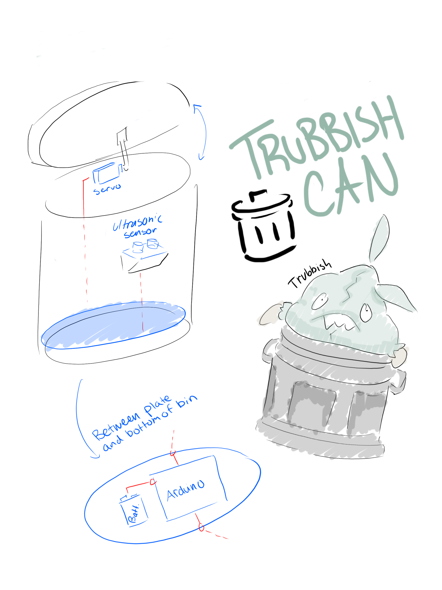

Final Project Proposal
Christian Chung
My desk’s trash bin is unsightly, so I wanted to design something that’s both functional and fun. Inspired by Pokémon, I decided to create a Pokémon-themed automatic trash bin that opens its lid when I place my hand (or trash) near it and closes automatically. The project combines basic sensors, motion control, and 3D design to bring a bit of personality to my workspace.

Phase 1: Create schematic, write initial code, and design rough 3D parts. Begin simulating sensor readings and matching servo outputs with printed prototypes. Add a smoothing filter for accurate lid motion. If the ultrasonic sensor proves noisy, temporarily use a simple button input with a timer.
Phase 2: Print and assemble 3D parts, integrate the full circuit, and test with a 9V battery. If parts don’t fit, remeasure and reprint critical components. Default to a 5V power supply if battery performance is unstable. If the servo torque is insufficient, swap motors or adjust the leverage of the printed arm.
Phase 3: Continue to iterate and refine. If time is short to complete the full Pokémon theme, prioritize functionality first and leave the design unpainted.